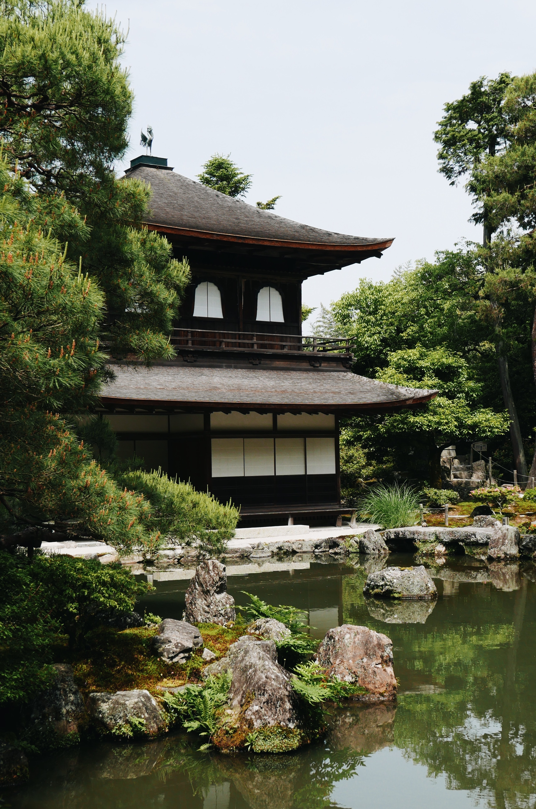

What Is Bonsai?
The word Bonsai means “a tree which is planted in a shallow container”. The art form originated from China and has been redeveloped by Japanese Zen Buddhism. Bonsai’s are not miniature trees; they are like any other tree. In fact, any type of tree can be developed and sculpted into a Bonsai.

The practice has been around for more than a thousand years.

Growing a Bonsai challenges our gardening skills and artistic vision.
Why I Grow Bonsai

I grow Bonsai because I like the idea of gardening in a small space with such bold results. The art of Bonsai has taught me how to be patient when growing other plants. It has brought me some sense of gardening skills and a joy for learning about plants.
Meet The Bonsai Master
YouTube Video: "Bonsai: The Endless Ritual"